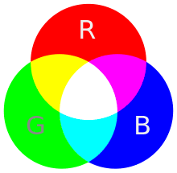

Inleiding tot Kleurmodellen
Kleurmodellen zijn systemen die beschrijven hoe kleuren worden weergegeven en gemengd in digitale en gedrukte media. De twee meest voorkomende kleurmodellen zijn RGB en CMY-K, elk met een specifiek toepassingsgebied en werkwijze.

RGB (Rood, Groen, Blauw)
Wat is RGB?
RGB staat voor Rood, Groen en Blauw. Dit kleurmodel wordt voornamelijk gebruikt in digitale schermen, zoals computermonitoren, televisies en camera’s.
Hoe werkt RGB?
Het RGB-model is een additief kleurmodel, wat betekent dat kleuren worden gecreëerd door licht van verschillende golflengten op te tellen. Door de intensiteit van elke van de drie basiskleuren (rood, groen en blauw) te variëren, kan een breed scala aan kleuren worden gegenereerd.
Rood (R): Wordt weergegeven als de eerste component.
Groen (G): Wordt weergegeven als de tweede component.
Blauw (B): Wordt weergegeven als de derde component.
Wanneer alle drie de componenten op hun maximale intensiteit worden ingesteld, produceert het RGB-model wit licht. Wanneer alle componenten op nul staan, wordt zwart geproduceerd.
Gebruik van RGB:
Digitale schermen (computers, tv's, mobiele apparaten)
Digitale fotografie
Webdesign
Voorbeeld:
RGB(255, 0, 0) staat voor fel rood.
RGB(0, 255, 0) staat voor fel groen.
RGB(0, 0, 255) staat voor fel blauw.

CMY-K (Cyaan, Magenta, Geel, Zwart)
Wat is CMY-K?
CMY-K staat voor Cyaan, Magenta, Geel en Zwart (Key). Dit kleurmodel wordt voornamelijk gebruikt in de drukindustrie.
Hoe werkt CMY-K?
Het CMY-K-model is een subtractief kleurmodel, wat betekent dat kleuren worden gecreëerd door bepaalde golflengten van licht te absorberen en de resterende te reflecteren. Dit gebeurt door het mengen van inkten.
Cyaan (C): Absorbeert rood licht en reflecteert groen en blauw.
Magenta (M): Absorbeert groen licht en reflecteert rood en blauw.
Geel (Y): Absorbeert blauw licht en reflecteert rood en groen.
Zwart (K): Wordt toegevoegd om diepte en schaduwen te creëren, aangezien puur mengen van Cyaan, Magenta en Geel vaak niet een diepe zwart kan produceren.
Gebruik van CMY-K:
Printen (folders, boeken, posters)
Drukwerk (kranten, tijdschriften)
Voorbeeld:
CMY-K(0, 100, 100, 0) staat voor puur magenta.
CMY-K(0, 0, 100, 0) staat voor puur geel.
CMY-K(0, 0, 0, 100) staat voor puur zwart.
Pixels en Resolutie
Wat is een Pixel?
Een pixel is de kleinste eenheid van een digitale afbeelding of display. Elke pixel bevat kleurinformatie die wordt bepaald door de intensiteit van de kleurcomponenten (bijvoorbeeld Rood, Groen en Blauw in het RGB-model).
Wat is Resolutie?
Resolutie verwijst naar het aantal pixels in een afbeelding of display, meestal uitgedrukt als de breedte x hoogte (bijvoorbeeld 1920 x 1080). Hogere resolutie betekent meer pixels, wat resulteert in scherpere en gedetailleerdere beelden.
Pixelafmetingen:
DPI (Dots Per Inch): Wordt vaak gebruikt in print om de dichtheid van inktdruppels op papier te beschrijven.
PPI (Pixels Per Inch): Wordt gebruikt om de dichtheid van pixels op een digitaal scherm te beschrijven.
Voorbeeld:
Een schermresolutie van 1920 x 1080 betekent dat er 1920 pixels horizontaal en 1080 pixels verticaal zijn, wat neerkomt op een totaal van 2.073.600 pixels.
Samenvatting
RGB en CMY-K zijn twee fundamenteel verschillende kleurmodellen die worden gebruikt in respectievelijk digitale en gedrukte media. Begrip van deze modellen, evenals van pixels en resolutie, is cruciaal voor het creëren en weergeven van kwalitatief hoogwaardige visuele inhoud.